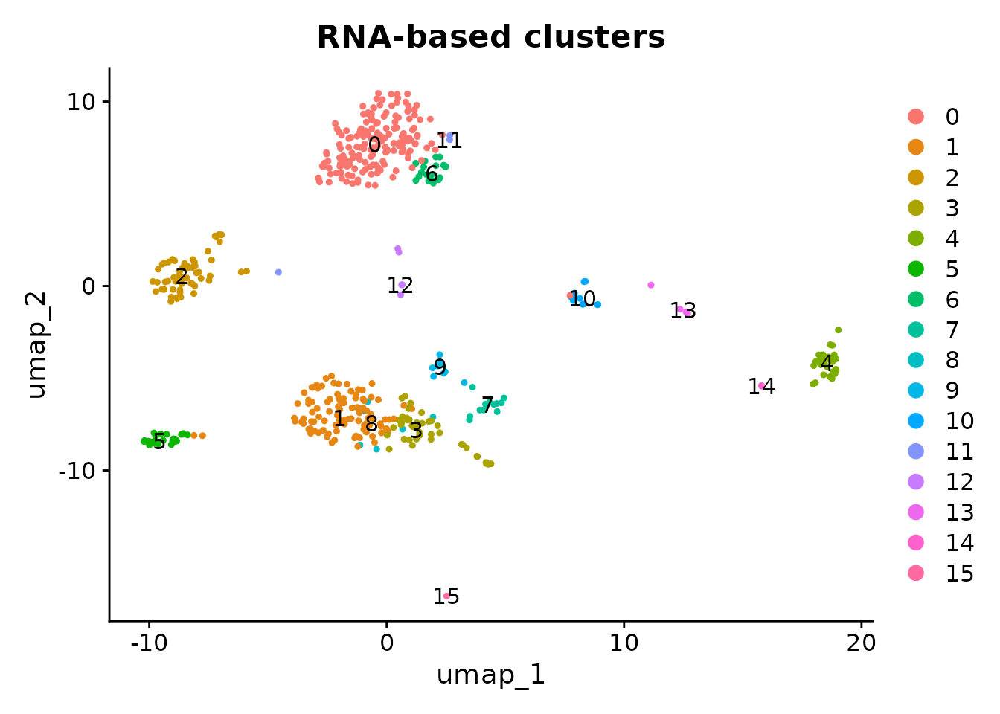
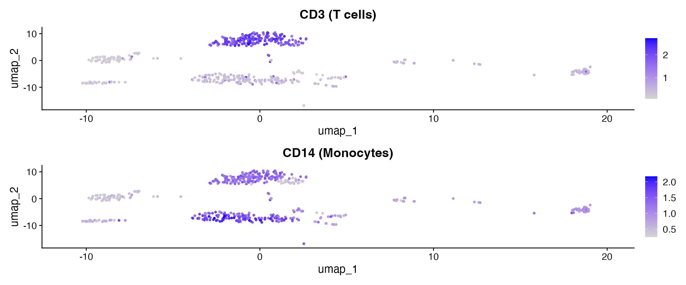

Introduction
CITE-seq (Cellular Indexing of Transcriptomes and Epitopes by Sequencing) measures RNA transcription and surface protein abundance from the same cells. This produces two assays per cell: RNA gene expression and ADT (antibody-derived tag) protein counts. The h5mu format is ideal for storing both modalities in a single file. scConvert handles both assays during format conversion, and provides two export paths:
- h5ad: Exports a single assay (RNA or ADT) per file, for scanpy workflows
- h5mu: Exports all assays in one file, for muon/MuData workflows
Read CITE-seq data from h5mu
The shipped citeseq_demo.h5mu contains 500 cells with
RNA (2,000 genes) and ADT (10 antibodies: CD3, CD4, CD8, CD45RA, CD56,
CD16, CD11c, CD14, CD19, CD34), pre-processed with PCA, UMAP, and
clustering.
h5mu_file <- system.file("extdata", "citeseq_demo.h5mu", package = "scConvert")
obj <- readH5MU(h5mu_file)
cat("Cells:", ncol(obj), "\n")
#> Cells: 500
cat("Assays:", paste(names(obj@assays), collapse = ", "), "\n")
#> Assays: ADT, RNA
cat("RNA features:", nrow(obj[["RNA"]]), "\n")
#> RNA features: 2000
cat("ADT features:", nrow(obj[["ADT"]]), "\n")
#> ADT features: 10
cat("ADT markers:", paste(rownames(obj[["ADT"]]), collapse = ", "), "\n")
#> ADT markers: CD3, CD4, CD8, CD45RA, CD56, CD16, CD11c, CD14, CD19, CD34Visualize RNA clusters
DimPlot(obj, group.by = "seurat_clusters", label = TRUE, pt.size = 0.8) +
ggtitle("RNA-based clusters")
Visualize protein expression
ADT markers reveal cell-surface protein levels that complement the transcriptomic clusters. After reading h5mu, the ADT assay contains only raw counts, so we normalize with CLR before plotting. CD3 marks T cells; CD14 marks monocytes.
DefaultAssay(obj) <- "ADT"
obj <- NormalizeData(obj, normalization.method = "CLR", margin = 2, verbose = FALSE)
library(patchwork)
p1 <- FeaturePlot(obj, features = "CD3", pt.size = 0.8) + ggtitle("CD3 (T cells)")
p2 <- FeaturePlot(obj, features = "CD14", pt.size = 0.8) + ggtitle("CD14 (Monocytes)")
p1 + p2
Export: h5ad vs h5mu
h5ad – single assay
writeH5AD() writes one assay at a time. By default it
writes the active assay (RNA). This is the right choice for standard
scanpy workflows.
h5mu – all assays
writeH5MU() writes every assay as a separate modality,
keeping RNA and ADT together in a single file.
Reload and verify
From h5mu (RNA + ADT)
loaded_h5mu <- readH5MU(h5mu_path)
cat("h5mu loaded:", ncol(loaded_h5mu), "cells\n")
#> h5mu loaded: 500 cells
cat("Assays:", paste(names(loaded_h5mu@assays), collapse = ", "), "\n")
#> Assays: ADT, RNA
cat("RNA features:", nrow(loaded_h5mu[["RNA"]]), "\n")
#> RNA features: 2000
cat("ADT features:", nrow(loaded_h5mu[["ADT"]]), "\n")
#> ADT features: 10Verify expression preservation
# Compare against the original h5mu-loaded object
orig <- readH5MU(h5mu_file)
common_cells <- intersect(colnames(orig), colnames(loaded_h5mu))
common_genes <- intersect(rownames(orig[["RNA"]]), rownames(loaded_h5mu[["RNA"]]))
orig_rna <- as.numeric(GetAssayData(orig, assay = "RNA", layer = "counts")[
head(common_genes, 100), head(common_cells, 100)])
rt_rna <- as.numeric(GetAssayData(loaded_h5mu, assay = "RNA", layer = "counts")[
head(common_genes, 100), head(common_cells, 100)])
cat("RNA counts identical:", identical(orig_rna, rt_rna), "\n")
#> RNA counts identical: TRUE
common_adt <- intersect(rownames(orig[["ADT"]]), rownames(loaded_h5mu[["ADT"]]))
orig_adt <- as.numeric(GetAssayData(orig, assay = "ADT", layer = "counts")[
common_adt, head(common_cells, 100)])
rt_adt <- as.numeric(GetAssayData(loaded_h5mu, assay = "ADT", layer = "counts")[
common_adt, head(common_cells, 100)])
cat("ADT counts identical:", identical(orig_adt, rt_adt), "\n")
#> ADT counts identical: TRUEWhen to use h5ad vs h5mu
| Scenario | Recommended format | Why |
|---|---|---|
| scanpy RNA analysis | h5ad | scanpy expects single-AnnData input |
| Share with Python collaborator (multi-assay) | h5mu | Keeps RNA + ADT together in one file |
| Archive a CITE-seq experiment | h5mu | Preserves all modalities |
| Feed into cellxgene | h5ad | cellxgene reads h5ad, not h5mu |
| Downstream muon/MOFA+ analysis | h5mu | muon operates on MuData objects |
Python interoperability
Both exported files are directly readable in Python.
Session Info
sessionInfo()
#> R version 4.6.0 (2026-04-24)
#> Platform: x86_64-pc-linux-gnu
#> Running under: Ubuntu 24.04.4 LTS
#>
#> Matrix products: default
#> BLAS: /usr/lib/x86_64-linux-gnu/openblas-pthread/libblas.so.3
#> LAPACK: /usr/lib/x86_64-linux-gnu/openblas-pthread/libopenblasp-r0.3.26.so; LAPACK version 3.12.0
#>
#> locale:
#> [1] LC_CTYPE=C.UTF-8 LC_NUMERIC=C LC_TIME=C.UTF-8
#> [4] LC_COLLATE=C.UTF-8 LC_MONETARY=C.UTF-8 LC_MESSAGES=C.UTF-8
#> [7] LC_PAPER=C.UTF-8 LC_NAME=C LC_ADDRESS=C
#> [10] LC_TELEPHONE=C LC_MEASUREMENT=C.UTF-8 LC_IDENTIFICATION=C
#>
#> time zone: UTC
#> tzcode source: system (glibc)
#>
#> attached base packages:
#> [1] stats graphics grDevices utils datasets methods base
#>
#> other attached packages:
#> [1] patchwork_1.3.2 ggplot2_4.0.3 Seurat_5.5.0 SeuratObject_5.4.0
#> [5] sp_2.2-1 scConvert_0.2.0
#>
#> loaded via a namespace (and not attached):
#> [1] RColorBrewer_1.1-3 jsonlite_2.0.0 magrittr_2.0.5
#> [4] spatstat.utils_3.2-2 farver_2.1.2 rmarkdown_2.31
#> [7] fs_2.1.0 ragg_1.5.2 vctrs_0.7.3
#> [10] ROCR_1.0-12 spatstat.explore_3.8-0 htmltools_0.5.9
#> [13] sass_0.4.10 sctransform_0.4.3 parallelly_1.47.0
#> [16] KernSmooth_2.23-26 bslib_0.10.0 htmlwidgets_1.6.4
#> [19] desc_1.4.3 ica_1.0-3 plyr_1.8.9
#> [22] plotly_4.12.0 zoo_1.8-15 cachem_1.1.0
#> [25] igraph_2.3.0 mime_0.13 lifecycle_1.0.5
#> [28] pkgconfig_2.0.3 Matrix_1.7-5 R6_2.6.1
#> [31] fastmap_1.2.0 MatrixGenerics_1.24.0 fitdistrplus_1.2-6
#> [34] future_1.70.0 shiny_1.13.0 digest_0.6.39
#> [37] S4Vectors_0.50.0 tensor_1.5.1 RSpectra_0.16-2
#> [40] irlba_2.3.7 GenomicRanges_1.64.0 textshaping_1.0.5
#> [43] labeling_0.4.3 progressr_0.19.0 spatstat.sparse_3.1-0
#> [46] httr_1.4.8 polyclip_1.10-7 abind_1.4-8
#> [49] compiler_4.6.0 bit64_4.8.0 withr_3.0.2
#> [52] S7_0.2.2 fastDummies_1.7.6 MASS_7.3-65
#> [55] tools_4.6.0 lmtest_0.9-40 otel_0.2.0
#> [58] httpuv_1.6.17 future.apply_1.20.2 goftest_1.2-3
#> [61] glue_1.8.1 nlme_3.1-169 promises_1.5.0
#> [64] grid_4.6.0 Rtsne_0.17 cluster_2.1.8.2
#> [67] reshape2_1.4.5 generics_0.1.4 hdf5r_1.3.12
#> [70] gtable_0.3.6 spatstat.data_3.1-9 tidyr_1.3.2
#> [73] data.table_1.18.2.1 BiocGenerics_0.58.0 BPCells_0.3.1
#> [76] spatstat.geom_3.7-3 RcppAnnoy_0.0.23 ggrepel_0.9.8
#> [79] RANN_2.6.2 pillar_1.11.1 stringr_1.6.0
#> [82] spam_2.11-3 RcppHNSW_0.6.0 later_1.4.8
#> [85] splines_4.6.0 dplyr_1.2.1 lattice_0.22-9
#> [88] survival_3.8-6 bit_4.6.0 deldir_2.0-4
#> [91] tidyselect_1.2.1 miniUI_0.1.2 pbapply_1.7-4
#> [94] knitr_1.51 gridExtra_2.3 Seqinfo_1.2.0
#> [97] IRanges_2.46.0 scattermore_1.2 stats4_4.6.0
#> [100] xfun_0.57 matrixStats_1.5.0 stringi_1.8.7
#> [103] lazyeval_0.2.3 yaml_2.3.12 evaluate_1.0.5
#> [106] codetools_0.2-20 tibble_3.3.1 cli_3.6.6
#> [109] uwot_0.2.4 xtable_1.8-8 reticulate_1.46.0
#> [112] systemfonts_1.3.2 jquerylib_0.1.4 Rcpp_1.1.1-1.1
#> [115] globals_0.19.1 spatstat.random_3.4-5 png_0.1-9
#> [118] spatstat.univar_3.1-7 parallel_4.6.0 pkgdown_2.2.0
#> [121] dotCall64_1.2 listenv_0.10.1 viridisLite_0.4.3
#> [124] scales_1.4.0 ggridges_0.5.7 purrr_1.2.2
#> [127] crayon_1.5.3 rlang_1.2.0 cowplot_1.2.0